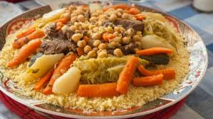
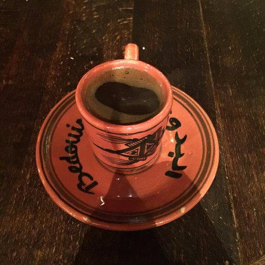
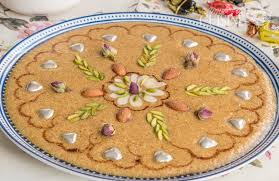
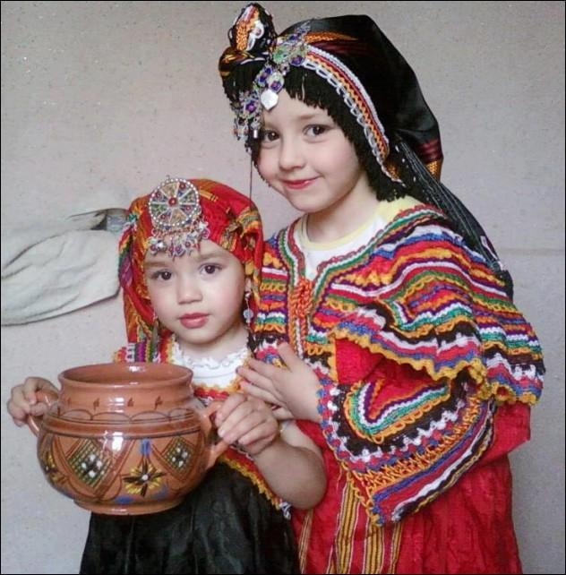
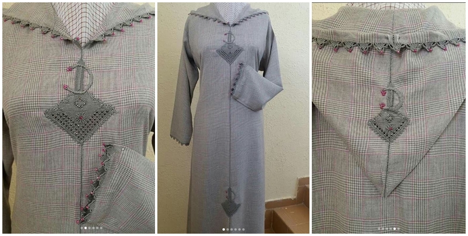
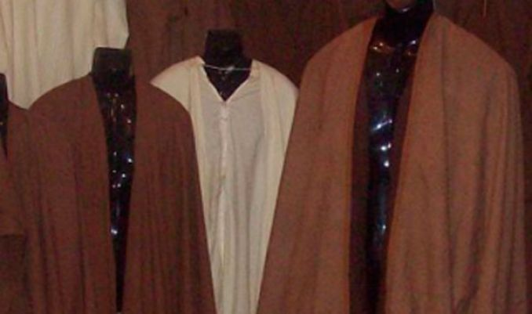
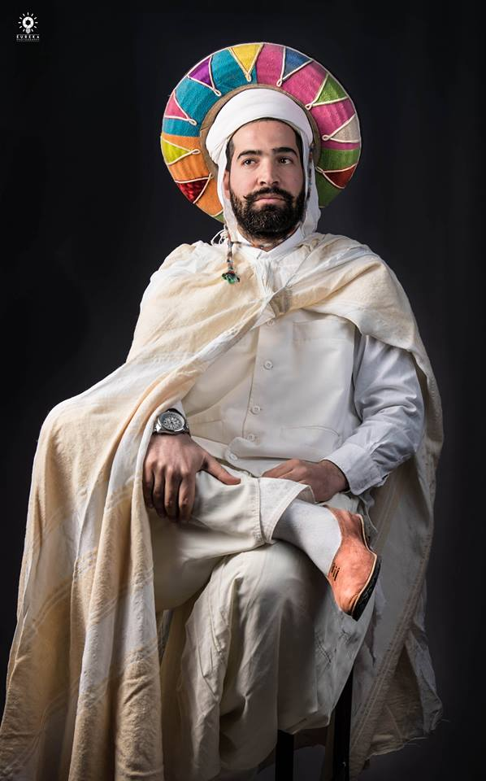
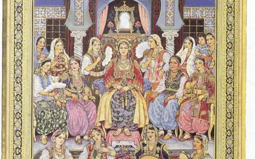
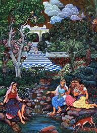
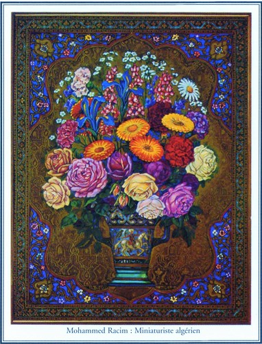

Algeria is the largest country in Africa and located on the Mediterranean coast between Morocco and Tunisia. At 2.38 million square kilometers (919,595.3 sq. miles), it is the tenth largest country in the world. Most of the cities in Algeria are near the coast. Algiers, located in northern Algeria, is the most populated city with 2.594 million residents. Oran, located in the north-west, is the second largest with 858,000 residents.
The Sahara Desert comprises 80% of the country. Algeria has a mostly arid climate with temperatures from 21-24° C (70-75° F) during the summer to 10-12° C (50-54° F) during the winter. One unique feature of Algeria’s climate is the Sirocco winds. The Sirocco winds are hot, sandy, gale force winds that are prominent in the summer season and occasionally strong enough to cause sandstorms.
There are large reserves of oil and gas scattered across the country. Some of the largest concentrations are on the eastern border with Libya, in the southern desert, and along the northern coastline. Offshore drilling is also utilized by Algeria to tap into oil and gas reserves in the Mediterranean. The country’s first drilling contract was awarded to a French oil company in December 2012
CULTURE:
Algerian culture is a unique blend of tradition and outside influence. Over the centuries it has been formed by the influence of three different civilizations: Arab, African, and Mediterranean. The geographical position of Algeria has facilitated exposure to a variety of cultures and the mixing of several cultures at once, through trade for instance.
Food:
Largely thanks to its rich history, and geographical location, Algerian cuisine reflects a variety of cultural influences. Durum wheat was a staple of the Berbers. When it is steamed it turns into couscous, which remains a staple of Algerian cooking to this day.
Couscous dishes (often served with lamb, chicken or cooked vegetables) are so common, they’re often referred to as ta’am in Arabic, which simply translates as ‘food’. Other kinds of grain – such as bulgur wheat and barley – can also be steamed (in a couscoussier) to create different varieties of couscous. Locally-grown crops such as potatoes, tomatoes, onions, chickpeas, olives and dates are common ingredients in Algerian dishes. In Saharan regions, dates and figs and hard cheeses are eaten with flat unleavened breads baked over fires.
Many dishes, especially stews, soups and sausages, have a hot or spicy flavor. A popular spicy soup is chorba (literally, “soup: in Arabic) The spicy flavors were brought over with the Arabs, who introduced Algeria to spices such as saffron, nutmeg and cinnamon.
The Ottoman Turks brought sweet pastries to the region. Many local sweets incorporate the staple wheat, such as tamina, into pastries or desserts. The wheat can for example be roasted with butter and honey. In former Spanish-controlled cities, such as Oran, dishes like paella are popular. The French introduced sidewalk cafés, and many eating places today serve traditional North African foods and drinks like mint tea and Turkish-style strong black coffee.



Clothing:
Algerian people have a strong sartorial tradition that isis still adhered to today. Folk dresses are commonly worn, especially in rural areas. Many local designers use the traditional features of Algerian outfits in modern clothes. Western dress is very common in Algeria as well.
A burnous is a long woolen cloak with a hood traditionally used by Algerian men. Many Algerian garments are hooded because of the practical uses associated with hoods for the Algerian climate. It protects the wearer from the sun, desert winds, and sand, and in the mountain regions it protects from the cold, rain, and snow. Usually, the burnous is white and made from the fine thin wool. A burnous is often very festive, decorated with embroidery, tassels, and patterns on the fabric. This garment is used in several Arab countries.
Another piece of Algerian traditional clothing is a djellaba, a garment that is used in several North African countries. It is a loose, long-sleeved robe with a hood, used by both men and women. The color of a djellaba tells the marital status of the wearer: light colors for married men and dark brown color for bachelors. Traditionally it was ankle-length or ground-length but modern djellabas are a little shorter. The male djellaba is more loose and plain than women’s one.
Traditional female outfits are usually bright and colorful, with rich decorations in gold and silver threads. The modest clothing is often fitted with lace, patterns on the fabric, jewelry, and so on. Algerian women wear different long dresses that cover their body from head to toe. Commonly, the traditional loose trousers are worn underneath the dress. Most Algerians are Muslim, so the women tend to cover their heads with types of veils.
One of the traditional Algerian dresses is called “karakou”. It always consists of a velvet jacket embroidered with gold threads. Usually, the jacket is worn with the traditional Arab trousers called “saroual”, but modern karakou can be used with a long skirt.
The traditional Algerian male headdress is a fez. It is a felt, tight-fitting cap in the shape of a short cylinder. Usually, a fez is red. The fez is particularly popular in the countries that used to be a part of the Ottoman Empire




Music:
Two of the most popular genres of music found in the North African and Arab regions have originated in Algeria: Algerian Chaabi (“folk”) and Rai. Chaabi is a combination of classical Arab and Andalusian music with traditionally deep moral messages of love, loss, celebration, and friendship. El Hadj M’Hamed El Anka (1907-1978) is considered the master of both Andalusian and Algerian Chaabi music in Algeria. He was an accomplished musician who recorded over 360 songs on 130 albums throughout his lifetime
By far the most popular type of modern music is Rai, a mixture of Western and traditional Algerian Bedouin (nomadic) music. Translated as “opinion,” Rai appeals to young people who use it as an outlet to express political and social discontent. It is more abrasive and louder than the traditional music that comes out of the region. Rai music expresses opposition to government authoritarianism and conservatives’ religious ideals. Its popularity has spread to France, Spain and other Middle Eastern countries.
The most famous Rai artist is Cheb Khaled, the legendary “King of Rai.” Born in Oran, Algeria, he began recording in his early teens and is considered the most famous Algerian singer in the Arab world. He has sold over 46 million albums worldwide and his 1992 hit single, “Didi,” propelled him into international stardom. Likewise, Chab Khaled’s French and Algerian Arabic “Aicha“, released in 1996, rose to the top of a multitude of international music charts. The song features the title subject’s rejection of a suitor’s offer of fanciful gifts and adoration in favor of equal rights and respect as a woman.
Art:
Algerian artists are known for their intricate paintings, sculptures and woven tapestries. Mohammed Racim is a famous painter considered to be the “Father of Miniatures” and is recognized as one of the most highly regarded cultural and national influences in Algeria. His miniature paintings are hand-painted in water color or oil and are no more than a few inches in dimension. They usually contain historical recreations or depict everyday cultural events. Racim’s work in the 1930s made him a significant cultural and political figure in Algeria as his work often portrayed a fictional Algerian future without the influence of French colonizers and a rich and prosperous past before French rule.


